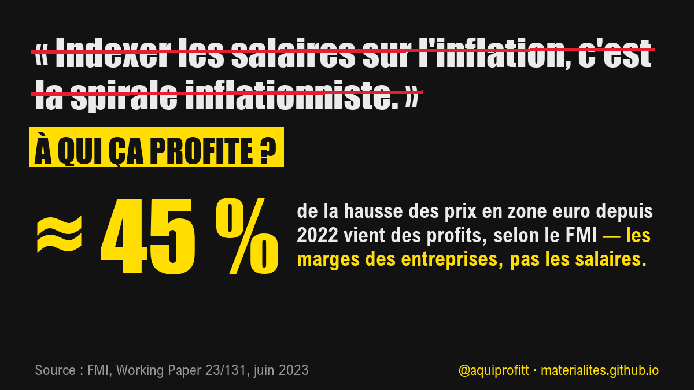

Réponse · 22 novembre 2026
Indexer les salaires, est-ce relancer la spirale des prix ?
L’idée reçue
« Indexer les salaires sur l'inflation, c'est la spirale inflationniste. »

L'argument revient dans les critiques des programmes pour 2027 : si les salaires suivent automatiquement les prix, les entreprises répercutent la hausse sur leurs tarifs, ce qui relance les prix, et ainsi de suite. Une « spirale prix-salaires ».
La dernière vague d'inflation permet de le vérifier. Selon une étude du FMI publiée en juin 2023, la hausse des profits des entreprises explique un peu moins de 45 % de l'inflation en zone euro depuis 2022, et la hausse des prix des importations, surtout l'énergie, environ 40 %. Les salaires ont suivi avec retard : sur la période, le pouvoir d'achat du salaire a baissé. Le FMI précise lui-même que cela ne fait pas des profits la cause unique de l'inflation : cela montre que les profits ont mieux résisté que les salaires.
La vraie question est donc : quand les prix montent, qui peut protéger son revenu ? Une entreprise qui domine son marché peut relever ses prix. Un salarié, dont le salaire n'est plus indexé sur les prix depuis 1982-1983, attend la prochaine négociation et perd entre-temps. Indexer les salaires ne crée pas le conflit sur le partage : il change qui en supporte le coût.
Ce que l'argument dit de juste : dans la zone euro, si les coûts montent plus vite qu'ailleurs, la compétitivité peut en souffrir. Mais la réponse peut porter sur les marges, et pas seulement sur les salaires. C'est tout l'enjeu de 2022 : les marges ont protégé les profits, pas les salaires.
Les sources
Pour aller plus loin
 vidéoINFLATION : COMPRENDRE CE FLÉAU QUI ASSOMME LES FRANÇAISTreize minutes pour comprendre qui peut augmenter ses prix pendant une vague d'inflation, et qui ne le peut pas.articlearticleInflation : la lutte des classes par les prixUne note qui lit l'inflation récente comme un conflit sur le partage du revenu entre salaires et profits.podcastpodcastLe travail appauvrit : l’angle mort de l’inflation. Avec Gilles RaveaudUn podcast d'une heure sur ce que l'inflation a fait aux salaires, et pourquoi on en parle si peu.
vidéoINFLATION : COMPRENDRE CE FLÉAU QUI ASSOMME LES FRANÇAISTreize minutes pour comprendre qui peut augmenter ses prix pendant une vague d'inflation, et qui ne le peut pas.articlearticleInflation : la lutte des classes par les prixUne note qui lit l'inflation récente comme un conflit sur le partage du revenu entre salaires et profits.podcastpodcastLe travail appauvrit : l’angle mort de l’inflation. Avec Gilles RaveaudUn podcast d'une heure sur ce que l'inflation a fait aux salaires, et pourquoi on en parle si peu. vidéoLES ILLUSIONS DE LA CLASSE DIRIGEANTE SUR LA COMPÉTITIVITÉ - Benjamin BriceComment la France est passée de salaires indexés à une politique de « compétitivité », et qui y a gagné.
vidéoLES ILLUSIONS DE LA CLASSE DIRIGEANTE SUR LA COMPÉTITIVITÉ - Benjamin BriceComment la France est passée de salaires indexés à une politique de « compétitivité », et qui y a gagné.